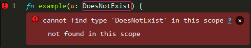
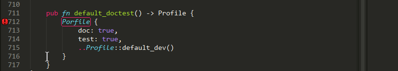
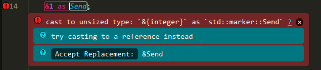
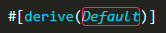
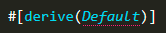

Diagnostic Messages
There are a variety of ways to display Rust compiler messages. See Settings for more details about how to configure settings.
Inline Phantoms vs Output Panel
The show_errors_inline setting controls whether or not errors are shown inline with the code using Sublime's "phantoms".
If it is true, it will also display an abbreviated message in the output panel.
If it is false, messages will only be displayed in the output panel, using rustc's formatting.
show_errors_inline
| Value | Example |
|---|---|
true |  |
false |  |
Popup Phantom Style
Phantoms can be displayed inline with the code, or as a popup when the mouse hovers over an error (either the gutter icon or the error outline).
The rust_phantom_style setting controls this behavior.
rust_phantom_style
| Value | Description |
|---|---|
normal | Phantoms are displayed inline. |
popup | Phantoms are displayed when the mouse hovers over an error. |
none | Phantoms are not displayed. |

Popup Command
You can bind the rust_message_popup command to a keyboard shortcut to force a popup to open if there is a message under the cursor.
Example:
{"keys": ["f8"], "command": "rust_message_popup", "context":
[
{"key": "selector", "operator":"equal", "operand": "source.rust"}
]
}
Phantom Themes
The style of the phantom messages is controlled with the rust_message_theme setting.
Currently the following themes are available:
rust_message_theme
| Value | Example |
|---|---|
clear |  |
solid |  |
Clear Theme Colors
The clear theme is designed to integrate with your chosen Color Scheme.
You can customize the colors of the messages with the following settings.
| Setting | Default | Description |
|---|---|---|
rust_syntax_error_color | "var(--redish)" | Color of error messages. |
rust_syntax_warning_color | "var(--yellowish)" | Color of warning messages. |
rust_syntax_note_color | "var(--greenish)" | Color of note messages. |
rust_syntax_help_color | "var(--bluish)" | Color of help messages. |
Region Highlighting
The span of code for a compiler message is by default highlighted with an outline.
rust_region_style
| Value | Example | Description |
|---|---|---|
outline |  | Regions are highlighted with an outline. |
solid_underline |  | Solid underline. |
stippled_underline |  | Stippled underline. |
squiggly_underline |  | Squiggly underline. |
none |  | Regions are not highlighted. |
Gutter Images
The gutter (beside the line numbers) will include an icon indicating the level of the message.
The styling of these icons is controlled with rust_gutter_style.
rust_gutter_style
| Value | Description |
|---|---|
shape |  |
circle |  |
none | Do not display icons. |
Other Settings
A few other settings are available for controlling messages:
| Setting | Default | Description |
|---|---|---|
show_panel_on_build | true | If true, an output panel is displayed at the bottom of the window showing the compiler output. |
rust_syntax_hide_warnings | false | If true, will not display warning messages. |
rust_message_status_bar | false | If true, will display the message under the cursor in the window status bar. |
rust_message_status_bar_msg | "Rust check running | The message to display when the syntax check is running. |
rust_message_status_bar_chars | [".", "..", "...", ".."] | The characters shown in the status bar while a check is running. |
rust_message_status_bar_update_delay | 200 | How often (ms) should the status bar text be updated when syntax checking. |